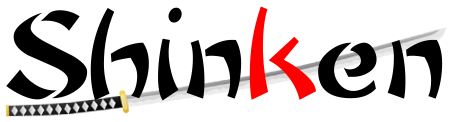

Shinken : Installation et configuration du successeur de Nagios
Contents
|  | |
| Software version | 1.2.2 |
|---|---|
| Operating System | Debian 7 |
| Website | Shinken Website |
| Last Update | 03/01/2013 |
| Others | |
{kind=link}
1 Introduction
Shinken[1] est une application permettant la surveillance système et réseau. Elle surveille les hôtes et services spécifiés, alertant lorsque les systèmes vont mal et quand ils vont mieux. C'est un logiciel libre sous licence GNU AGPL. Elle est complètement compatible avec le logiciel Nagios et elle a pour but d'apporter une supervision distribuée et hautement disponible facile à mettre en place. Démarrée comme une preuve de concept pour Nagios sur les architectures distribuée, le programme a rapidement démontré des performances et une flexibilité bien plus importantes que son ainé Nagios.
Suite à un refus en décembre 2009 des développeurs de Nagios de voir Shinken devenir la nouvelle branche de développement de Nagios dans le futur, Shinken peut désormais être considéré comme un projet indépendant de système de surveillance système et réseau.
2 Installation
Nous pourrions choisir d'installer Shinken depuis les dépôts officiels de Debian, malheureusement c'est une vieille version car le projet évolue très vite. Il existe un installeur officiel qui va nous permettre d'obtenir la dernière version, ainsi que les dépendances nécessaires. Tout d'abord, nous allons installer curl :
| |
aptitude install curl |
Puis nous lançons l'installation :
| |
> curl -L http://install.shinken-monitoring.org | /bin/bash
% Total % Received % Xferd Average Speed Time Time Time Current
Dload Upload Total Spent Left Speed
0 0 0 0 0 0 0 0 --:--:-- --:--:-- --:--:-- 0
100 1533 100 1533 0 0 9919 0 --:--:-- --:--:-- --:--:-- 9919
Preparing the temporary directory /tmp/shinken-install-MDZFhh6
######################################################################## 100.0%
Unziping the Shinken package shinken-1.2.2.tar.gz
+--------------------------------------------------------------------------------
| Verifying compatible distros
+--------------------------------------------------------------------------------
> Found DEBIAN (Debian 7 x86_64)
> Version checking for Debian is not needed
+--------------------------------------------------------------------------------
| Checking for existing installation
+--------------------------------------------------------------------------------
+--------------------------------------------------------------------------------
| Checking prerequisites
+--------------------------------------------------------------------------------
> Checking for wget: OK
> Checking for sed: OK
> Checking for awk: OK
> Checking for grep: OK
> Checking for python: OK
> Checking for bash: OK
> Installing build-essential
> Installing libperl-dev
> Installing python-setuptools
> Installing libsqlite3-dev
> Installing python-dev
> Installing pyro
> Installing sqlite3
> Installing nmap
> Installing unzip
> Installing libmysqlclient-dev
> Installing python-ldap
> Installing libevent-dev
> Module paramiko (paramiko) not found. Installing...
> Module netifaces (netifaces) not found. Installing...
> Module simplejson (simplejson) not found. Installing...
> Module pysqlite found.
> Module MySQL_python (MySQLdb) not found. Installing...
> Module pymongo (pymongo) not found. Installing...
> Module kombu (kombu) not found. Installing...
+--------------------------------------------------------------------------------
| Creating user
+--------------------------------------------------------------------------------
+--------------------------------------------------------------------------------
| Relocate source tree to /usr/local/shinken
+--------------------------------------------------------------------------------
> relocating macro /usr/local/shinken/install.d/tools/macros/enable_log_mongo.macro
> relocating macro /usr/local/shinken/install.d/tools/macros/enable_retention_mongo.macro
> relocating macro /usr/local/shinken/install.d/tools/macros/disable_npcd.macro
> relocating macro /usr/local/shinken/install.d/tools/macros/set_webui_ouptput_length.macro
> relocating macro /usr/local/shinken/install.d/tools/macros/enable_npcd.macro
> relocating macro /usr/local/shinken/install.d/tools/macros/control_satelites.macro
> relocating macro /usr/local/shinken/install.d/tools/macros/enable_retention.macro
> relocate nagios plugin path
> Processing ./FOR_DEV
> Processing ./FROM_NAGIOS_TO_SHINKEN
> Processing ./README
> Processing ./README.rst
> Processing ./contrib/nconf/deployment.ini
> Processing ./etc/resource.cfg
> Processing ./etc/shinken-specific.cfg
> Processing ./etc/shinken-specific.cfg.orig
> Processing ./external_commands/ACKNOWLEDGE_HOST_PROBLEM.sh
> Processing ./external_commands/ADD_POLLER.sh
> Processing ./external_commands/CHANGE_CONTACT_HOST_NOTIFICATION_TIMEPERIOD.sh
> Processing ./external_commands/PROCESS_HOST_CHECK_RESULT.sh
> Processing ./install
> Processing ./install.d/config.nconf/deployment.ini
> Processing ./install.d/config.nconf/nconf.php
> Processing ./install.d/shinken.conf
> Processing ./install.d/tools/macros/control_satelites.macro
> Processing ./install.d/tools/macros/disable_npcd.macro
> Processing ./install.d/tools/macros/enable_log_mongo.macro
> Processing ./install.d/tools/macros/enable_npcd.macro
> Processing ./install.d/tools/macros/enable_retention.macro
> Processing ./install.d/tools/macros/enable_retention_mongo.macro
> Processing ./install.d/tools/macros/set_webui_ouptput_length.macro
> Processing ./libexec/SAN_discover_runner.py
> Processing ./libexec/eue/glpi.ini
> Processing ./libexec/eue/glpi.ini.in
> Processing ./libexec/fs_discovery_runner.py
> Processing ./libexec/vmware_discovery_runner.py
> Processing ./shinken/modules/npcdmod_broker.py
> Processing ./shinken/objects/config.py
> Processing ./shinken/webui/plugins/eue/eue.py
+--------------------------------------------------------------------------------
| Set some configuration directives
+--------------------------------------------------------------------------------
> Processing /usr/local/shinken/etc/brokerd.ini
> Going to /usr/local/shinken
> Setting workdir to /usr/local/shinken/var in /usr/local/shinken/etc/brokerd.ini
> Setting user to shinken in /usr/local/shinken/etc/brokerd.ini
> Setting group to shinken in /usr/local/shinken/etc/brokerd.ini
> Processing /usr/local/shinken/etc/pollerd.ini
> Going to /usr/local/shinken
> Setting workdir to /usr/local/shinken/var in /usr/local/shinken/etc/pollerd.ini
> Setting user to shinken in /usr/local/shinken/etc/pollerd.ini
> Setting group to shinken in /usr/local/shinken/etc/pollerd.ini
> Processing /usr/local/shinken/etc/reactionnerd.ini
> Going to /usr/local/shinken
> Setting workdir to /usr/local/shinken/var in /usr/local/shinken/etc/reactionnerd.ini
> Setting user to shinken in /usr/local/shinken/etc/reactionnerd.ini
> Setting group to shinken in /usr/local/shinken/etc/reactionnerd.ini
> Processing /usr/local/shinken/etc/receiverd.ini
> Going to /usr/local/shinken
> Setting workdir to /usr/local/shinken/var in /usr/local/shinken/etc/receiverd.ini
> Setting user to shinken in /usr/local/shinken/etc/receiverd.ini
> Setting group to shinken in /usr/local/shinken/etc/receiverd.ini
> Processing /usr/local/shinken/etc/schedulerd.ini
> Going to /usr/local/shinken
> Setting workdir to /usr/local/shinken/var in /usr/local/shinken/etc/schedulerd.ini
> Setting user to shinken in /usr/local/shinken/etc/schedulerd.ini
> Setting group to shinken in /usr/local/shinken/etc/schedulerd.ini
> Enable retention for broker scheduler and arbiter
> Installing startup scripts
> Enabling Debian startup script
+--------------------------------------------------------------------------------
| Install mongodb server
+--------------------------------------------------------------------------------
> repository configuration not found. Adding 10 gen repository
> Installing mongodb server
+--------------------------------------------------------------------------------
| Applying various fixes
+--------------------------------------------------------------------------------
> Starting shinken
+------------------------------------------------------------------------------| Shinken is now installed on your server | The install location is: /usr/local/shinken| The configuration folder is: /usr/local/shinken/etc| | The Web Interface is available at: http://localhost:7767| The default credentials for the webui are admin/admin| | You can now learn how to configure shinken at: http://www.shinken-monitoring.org/wiki+------------------------------------------------------------------------------ > updated configuration of module[3] passwd=/usr/local/shinken/etc/htpasswd.users updated configuration of module[3] passwd=/usr/local/shinken/etc/htpasswd.users
> Found installation parameters
--> ETC=/usr/local/shinken/etc
--> VAR=/usr/local/shinken/var
--> LIBEXEC=/usr/local/shinken/libexec
--> TARGET=/usr/local/shinken
> checking if shinken is installed in /usr/local/shinken
+--------------------------------------------------------------------------------
| Install nagios plugins
+--------------------------------------------------------------------------------
> Installing prerequisites
> Getting nagios-plugins archive
> Extract archive content
> Configure source tree
> Building ....
> Installing
> Found installation parameters
--> ETC=/usr/local/shinken/etc
--> VAR=/usr/local/shinken/var
--> LIBEXEC=/usr/local/shinken/libexec
--> TARGET=/usr/local/shinken
> checking if shinken is installed in /usr/local/shinken
+--------------------------------------------------------------------------------
| Install check_mem
+--------------------------------------------------------------------------------
> Downloading check_mem
> Extracting archive
> Installing plugin
> Found installation parameters
--> ETC=/usr/local/shinken/etc
--> VAR=/usr/local/shinken/var
--> LIBEXEC=/usr/local/shinken/libexec
--> TARGET=/usr/local/shinken
> checking if shinken is installed in /usr/local/shinken
+--------------------------------------------------------------------------------
| Install manubulon plugins
+--------------------------------------------------------------------------------
> Installing prerequisites
> Getting manubulon archive
> Extract archive content
> Relocate libs
=> Processing /tmp/nagios_plugins/check_snmp_boostedge.pl
=> Installing /tmp/nagios_plugins/check_snmp_boostedge.pl
=> Processing /tmp/nagios_plugins/check_snmp_cpfw.pl
=> Installing /tmp/nagios_plugins/check_snmp_cpfw.pl
=> Processing /tmp/nagios_plugins/check_snmp_css.pl
=> Installing /tmp/nagios_plugins/check_snmp_css.pl
=> Processing /tmp/nagios_plugins/check_snmp_css_main.pl
=> Installing /tmp/nagios_plugins/check_snmp_css_main.pl
=> Processing /tmp/nagios_plugins/check_snmp_env.pl
=> Installing /tmp/nagios_plugins/check_snmp_env.pl
=> Processing /tmp/nagios_plugins/check_snmp_int.pl
=> Installing /tmp/nagios_plugins/check_snmp_int.pl
=> Processing /tmp/nagios_plugins/check_snmp_linkproof_nhr.pl
=> Installing /tmp/nagios_plugins/check_snmp_linkproof_nhr.pl
=> Processing /tmp/nagios_plugins/check_snmp_load.pl
=> Installing /tmp/nagios_plugins/check_snmp_load.pl
=> Processing /tmp/nagios_plugins/check_snmp_mem.pl
=> Installing /tmp/nagios_plugins/check_snmp_mem.pl
=> Processing /tmp/nagios_plugins/check_snmp_nsbox.pl
=> Installing /tmp/nagios_plugins/check_snmp_nsbox.pl
=> Processing /tmp/nagios_plugins/check_snmp_process.pl
=> Installing /tmp/nagios_plugins/check_snmp_process.pl
=> Processing /tmp/nagios_plugins/check_snmp_storage.pl
=> Installing /tmp/nagios_plugins/check_snmp_storage.pl
=> Processing /tmp/nagios_plugins/check_snmp_vrrp.pl
=> Installing /tmp/nagios_plugins/check_snmp_vrrp.pl
=> Processing /tmp/nagios_plugins/check_snmp_win.pl
=> Installing /tmp/nagios_plugins/check_snmp_win.pl
> Found installation parameters
--> ETC=/usr/local/shinken/etc
--> VAR=/usr/local/shinken/var
--> LIBEXEC=/usr/local/shinken/libexec
--> TARGET=/usr/local/shinken
> checking if shinken is installed in /usr/local/shinken
+--------------------------------------------------------------------------------
| Install pnp4nagios addon
+--------------------------------------------------------------------------------
> Found installation parameters
--> ETC=/usr/local/shinken/etc
--> VAR=/usr/local/shinken/var
--> LIBEXEC=/usr/local/shinken/libexec
--> TARGET=/usr/local/shinken
> Installing prerequisites
> Getting pnp4nagios archive
> Extracting archive
> Configuring source tree
> Building ....
> Installing
> Fix htpasswd.users path
> Enable npcdmod
> using ip address: x.x.x.x
> Starting npcd
Exiting |
Voilà, il est installé avec ses dépendances :-). Nous pouvons maintenant le relancer :
| |
/etc/init.d/shinken restart ou service shinken restart |
2.1 Plugins
Nous pouvons également installer des plugins supplémentaires tel que les Nagios plugins :
| |
/usr/local/shinken/install -p nagios-plugins |
Une fois installés, les plugins sont installés dans /usr/local/shinken/libexec.
Si vous souhaitez avoir la liste des plugins Shinken disponibles :
| |
> /usr/local/shinken/install -h
[...]
-p | --plugin Install plugins. Argument should be one of the following:
check_esx3
nagios-plugins
check_oracle_health
check_mysql_health
capture_plugin
check_wmi_plus
check_mongodb
check_emc_clariion
check_nwc_health
manubulon (snmp plugins)
check_hpasm
check_netapp2
check_mem (local enhanced memory check plugin)
check_snmp_bandwidth (check bandwidth usage with snmp)
check_netint (enhanced version of check_snmp_int plugins)
check_IBM
check_IBM_DS
check_rsync
[...] |
3 Configuration
4 FAQ
4.1 Opening the log file 'arbiterd.log' failed with '[Errno 13] Permission denied
Si vous avez ce genre de message, c'est simplement dû à un problème de droits que l'installeur a oublié :
FAILED: [1357199441] Error : Opening the log file 'arbiterd.log' failed with '[Errno 13] Permission denied: u'/usr/local/shinken/var/arbiterd.log (full output is in /tmp/bad_start_for_arbiter) ... failed!
Vous pouvez corriger le problème en réatribuant les droits :
| |
service shinken stop chown -R shinken:shinken /usr/local/shinken service shinken start |